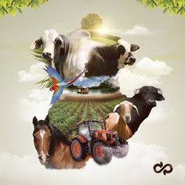

A Agronomia é a área profissional responsável pelo gerenciamento do cultivo agrícola e o conhecimento de questões relativas ao manejo do solo
Como é a Agronomia no Brasil? O Curso de Agronomia dura em média 5 anos. Durante esse período, uma variedade imensa de disciplinas teóricas e técnicas/práticas são ministradas, como genética, topografia, cartografia, zootecnia e fitotecnia, economia e administração rural, física, matemática, biotecnologia, entre outras.
